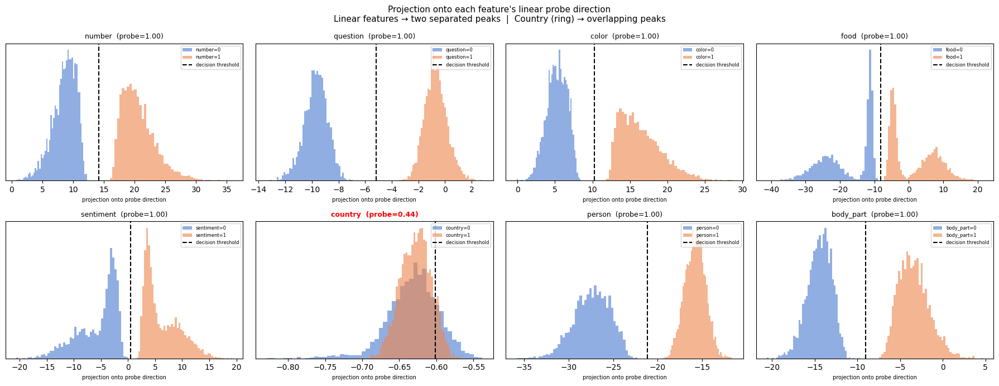

I worked through the BlueDot Technical AI Safety Puzzle. The puzzle is a mechanistic interpretability challenge that asks a fairly simple question: which one of eight learned features in a small MLP classifier isn't linear?
What followed was one of the more satisfying investigative sessions I've had in a while. Here's how it went.
The Setup
The model is a small text classifier built on top of sentence-transformers/all-MiniLM-L6-v2. You feed it a short sentence, and it predicts eight binary features simultaneously (ex. country, food, question). The problem: after a specific layer, seven of these features live as linear directions in activation space. One does not. Our job was to figure out which one, and how it's represented.
The model has learned internal representations, and we were asked to characterize its geometry.
Step 1: Linear Probes Tell You Almost Everything
To identify the non-linear feature, I hooked into the post-ReLU activations at layer 2 and fit logistic regression probes for each of the eight features.
The results immediatly pointed to a candidate feature:
| Feature | Train Probe | Test Probe |
|---|---|---|
| number | 1.0000 | 0.9753 |
| question | 1.0000 | 1.0000 |
| color | 1.0000 | 0.9713 |
| food | 1.0000 | 0.9853 |
| sentiment | 1.0000 | 0.9820 |
| country | 0.4410 | 0.4287 |
| person | 1.0000 | 0.9973 |
| body_part | 1.0000 | 0.9800 |
Seven features: probe accuracy of 1.00. One feature, country, was at 0.44, which is below chance. A linear probe is actively confused by it. To verify this finding, To verify this finding, I projected the activations onto the learned weight vector of the linear probe for each feature. For seven features, you see clean bimodal distributions with a clear decision boundary. For country, the two distributions sit on top of each other, indistinguishable along any single direction. The figure below shows the projections for each feature.

country (highlighted in red) shows fully overlapping dist
ributions — no linear boundary exists.I also double-checked by looking at other layers. Layer 1 didn't have a well-formed representation yet. Layer 2 post-ReLU was the right place to look.
Step 2: Visualizing the Confusion
To understand why the linear probe was failing, I ran PCA to project the 64-dim activations down to 2D and colored the scatter plot by country=0 and country=1. The two classes weren't linearly separable in this projection. They overlapped in a way that wasn't random, but it wasn't a hyperplane you could cut through.
Step 3: From "Non-Linear" to "Ring"
Knowing a feature is non-linear was only part of the puzzle. The second part asked how it's represented.
I tried a quadratic probe first, adding degree-2 polynomial features to the logistic regression. Accuracy jumped from 0.44 to 0.9716, while all other features stayed flat at 1.00.
To find the specific shape, I analyzed the radius distribution in the top-2 PCA subspace. Instead of asking "does a linear direction separate the classes," I asked "does the distance from the origin separate the classes?" The radius probe came back at 0.7124. This was clearly better than the linear probe. The feature was encoded in magnitude rather than direction.
Then I checked the angles. Within country=1 examples, I grouped by which country was mentioned and computed their mean angle in the PCA subspace. Different countries landed at systematically different angles. The ring was doing double duty: the radius encodes whether a country is present, and angle encodes which country. This was confirmed by a kernel SVM comparison. An RBF (Radial Basis Function: it measures the similarity between two data points based on their distance) kernel jumped from 0.51 to 0.94 accuracy on country, while all other features saw zero improvement.
Step 4: Building a Model That Does This on Purpose
The original model discovered the ring accidentally during training. Task 3 in the puzzle asked us to take this further: train a model that does it deliberately, and make the representation even more information-dense.
I designed a custom architecture that adds a ring_proj layer. This is a learned linear map from the 64-dim activations to a 2D coordinate space. I then used this loss function:
- Ring loss — push
country=1examples toward a target radius of 3.0, and pullcountry=0examples toward the origin - Clock loss — push examples with the same country toward the same angle, and push different countries apart
- Classification loss — standard binary cross-entropy across all eight features
Training over 80 epochs reduced total loss from 1.1654 to 0.2469, with all features reaching above 0.97 accuracy. The resulting ring was clean: country=0 examples form a tight cluster near the center, country=1 examples trace a circle at radius 3, and the ~20 countries spread around the clock face in distinct angular clusters. A radius-only probe on the 2D ring coordinates hits 0.9997.
What This Is Really About
I truly enjoy solving puzzles and conducting research; I especially enjoy when it focuses on major problems in mechanistic interpretability.
Most interpretability work starts from the assumption that features correspond to directions. This is sometimes called the linear representation hypothesis. In our case, we found that seven of eight features here were perfectly linear.
But the model also discovered, through gradient descent alone, that it could represent the country feature more efficiently as a ring. The radius acts like a switch (present/absent), and the angle acts like an identity card (which country). There were two pieces of information, two neurons, one non-linear geometry.
Try it out!
If you're interested in mechanistic interpretability or just want a concrete puzzle to work through, the repository is public.